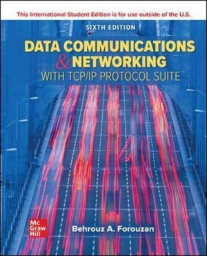

- 데이터통신
- 인터넷 세상을 이해하는데 가장 핵심적인 내용 중의 하나인 데이터 통신의 기본개념을 설명하고 데이터 통신에서 필요한 네트워크 구조, 전송매체, 전송신호, 전송대역폭, 인코딩, 프로토콜, OSI 참조모델, LAN등을 빔 프로젝트를 이용하여 풍부한 그림으로 알기 쉽게 설명한다.
- 이수 구분: 전공선택
- 담당 교수: 정연식 교수님
- 교재:

- 교재명: Data Communications and Networking with TCP/IP Protocol Suite
- 저자: Behrouz A. Forouzan
- 출판사: McGraw-Hill Education
- 출판연도: 2021